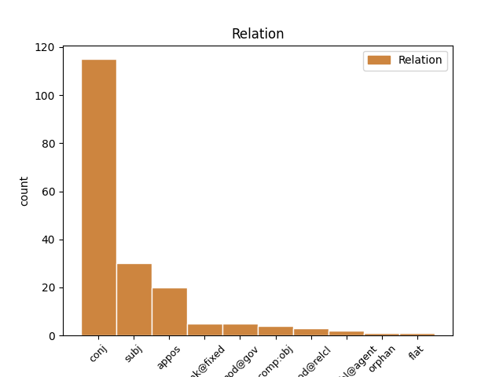

Distribution of features within this leaf

Agreement Rules sorted by frequency.
- When the dependent token is the conjunct(conj) of the head token, and the head token is NOUN and the dependent token is NOUN.
1 Але _ _ _ _ 0 _ _ _
2 вось _ _ _ _ 0 _ _ _
3 у _ _ _ _ 0 _ _ _
4 той _ _ _ _ 0 _ _ _
5 самы _ _ _ _ 0 _ _ _
6 час _ _ _ _ 0 _ _ _
7 , _ _ _ _ 0 _ _ _
8 даўным-даўно _ _ _ _ 0 _ _ _
9 , _ _ _ _ 0 _ _ _
10 жыў _ _ _ _ 0 _ _ _
11 адзін _ _ _ _ 0 _ _ _
12 такі _ _ _ _ 0 _ _ _
13 Слон слон NOUN _ Animacy=Anim|Case=Nom|Gender=Masc|Number=Sing 0 _ _ _
14 , _ _ _ _ 0 _ _ _
15 або _ _ _ _ 0 _ _ _
16 , _ _ _ _ 0 _ _ _
17 лепш _ _ _ _ 0 _ _ _
18 сказаць _ _ _ _ 0 _ _ _
19 , _ _ _ _ 0 _ _ _
20 Слонік слонік NOUN _ Animacy=Anim|Case=Nom|Gender=Masc|Number=Sing 13 conj _ SpaceAfter=No
21 , _ _ _ _ 0 _ _ _
22 які _ _ _ _ 0 _ _ _
23 быў _ _ _ _ 0 _ _ _
24 страшэнна _ _ _ _ 0 _ _ _
25 дапытлівы _ _ _ _ 0 _ _ _
26 , _ _ _ _ 0 _ _ _
27 і _ _ _ _ 0 _ _ _
28 каго _ _ _ _ 0 _ _ _
29 , _ _ _ _ 0 _ _ _
30 бывала _ _ _ _ 0 _ _ _
31 , _ _ _ _ 0 _ _ _
32 ні _ _ _ _ 0 _ _ _
33 ўбачыць _ _ _ _ 0 _ _ _
34 , _ _ _ _ 0 _ _ _
35 да _ _ _ _ 0 _ _ _
36 ўсіх _ _ _ _ 0 _ _ _
37 прыстае _ _ _ _ 0 _ _ _
38 з _ _ _ _ 0 _ _ _
39 роспытамі _ _ _ _ 0 _ _ _
40 . _ _ _ _ 0 _ _ _
1 Ён _ _ _ _ 0 _ _ _
2 прыставаў _ _ _ _ 0 _ _ _
3 да _ _ _ _ 0 _ _ _
4 свайго _ _ _ _ 0 _ _ _
5 даўганогага _ _ _ _ 0 _ _ _
6 дзядзькі _ _ _ _ 0 _ _ _
7 Жырафа _ _ _ _ 0 _ _ _
8 і _ _ _ _ 0 _ _ _
9 пытаўся _ _ _ _ 0 _ _ _
10 , _ _ _ _ 0 _ _ _
11 чаму _ _ _ _ 0 _ _ _
12 ў _ _ _ _ 0 _ _ _
13 яго _ _ _ _ 0 _ _ _
14 на _ _ _ _ 0 _ _ _
15 скуры _ _ _ _ 0 _ _ _
16 плямы _ _ _ _ 0 _ _ _
17 , _ _ _ _ 0 _ _ _
18 і _ _ _ _ 0 _ _ _
19 высачэзны _ _ _ _ 0 _ _ _
20 дзядзька дзядзька NOUN NN Animacy=Anim|Case=Nom|Gender=Masc|Number=Sing 0 _ _ _
21 Жыраф жыраф NOUN NNP Animacy=Anim|Case=Nom|Gender=Masc|Number=Sing 20 appos _ _
22 даваў _ _ _ _ 0 _ _ _
23 яму _ _ _ _ 0 _ _ _
24 за _ _ _ _ 0 _ _ _
25 гэта _ _ _ _ 0 _ _ _
26 грымака _ _ _ _ 0 _ _ _
27 сваім _ _ _ _ 0 _ _ _
28 цвёрдым _ _ _ _ 0 _ _ _
29 , _ _ _ _ 0 _ _ _
30 як _ _ _ _ 0 _ _ _
31 камень _ _ _ _ 0 _ _ _
32 , _ _ _ _ 0 _ _ _
33 капытом _ _ _ _ 0 _ _ _
34 . _ _ _ _ 0 _ _ _
1 Не _ _ _ _ 0 _ _ _
2 надта _ _ _ _ 0 _ _ _
3 глыбока _ _ _ _ 0 _ _ _
4 , _ _ _ _ 0 _ _ _
5 дно дно NOUN IN Animacy=Inan|Case=Nom|Gender=Masc|Number=Sing 9 subj _ _
6 і _ _ _ _ 0 _ _ _
7 берагі _ _ _ _ 0 _ _ _
8 густа _ _ _ _ 0 _ _ _
9 ўкрытыя ўкрыты ADJ NNP Animacy=Inan|Case=Nom|Degree=Pos|Number=Plur 0 _ _ _
10 асакой _ _ _ _ 0 _ _ _
11 , _ _ _ _ 0 _ _ _
12 рагозам _ _ _ _ 0 _ _ _
13 , _ _ _ _ 0 _ _ _
14 стрэлкалістам _ _ _ _ 0 _ _ _
15 і _ _ _ _ 0 _ _ _
16 чаротам _ _ _ _ 0 _ _ _
17 і _ _ _ _ 0 _ _ _
18 дуплістымі _ _ _ _ 0 _ _ _
19 карчамі _ _ _ _ 0 _ _ _
20 — _ _ _ _ 0 _ _ _
21 важная _ _ _ _ 0 _ _ _
22 ўмова _ _ _ _ 0 _ _ _
23 для _ _ _ _ 0 _ _ _
24 андатры _ _ _ _ 0 _ _ _
25 . _ _ _ _ 0 _ _ _
1 Але _ _ _ _ 0 _ _ _
2 ўдзельнічаю _ _ _ _ 0 _ _ _
3 з _ _ _ _ 0 _ _ _
4 задавальненнем _ _ _ _ 0 _ _ _
5 , _ _ _ _ 0 _ _ _
6 бо _ _ _ _ 0 _ _ _
7 гэта гэта PRON _ Animacy=Inan|Case=Nom|Gender=Neut|Number=Sing 9 subj _ _
8 каласальны _ _ _ _ 0 _ _ _
9 досвед досвед NOUN _ Animacy=Inan|Case=Nom|Gender=Masc|Number=Sing 0 _ _ _
10 . _ _ _ _ 0 _ _ _
1 Мы мы PRON PRP Case=Nom|Number=Plur|Person=1|PronType=Prs 2 subj _ _
2 жывыя жывы ADJ JJL Case=Nom|Degree=Pos|Number=Plur 0 _ _ _
3 і _ _ _ _ 0 _ _ _
4 мова _ _ _ _ 0 _ _ _
5 жывая _ _ _ _ 0 _ _ _
6 . _ _ _ _ 0 _ _ _
1 Пры _ _ _ _ 0 _ _ _
2 гэтым _ _ _ _ 0 _ _ _
3 характэрны _ _ _ _ 0 _ _ _
4 рост _ _ _ _ 0 _ _ _
5 рублёвых _ _ _ _ 0 _ _ _
6 укладаў _ _ _ _ 0 _ _ _
7 ( _ _ _ _ 0 _ _ _
8 на _ _ _ _ 0 _ _ _
9 2,5 _ _ _ _ 0 _ _ _
10 трлн трлн NOUN NN Animacy=Inan|Case=Gen|Gender=Masc|Number=Plur 11 mod@gov _ _
11 рублёў рубель NOUN NN Animacy=Inan|Case=Gen|Gender=Masc|Number=Plur 0 _ _ _
12 за _ _ _ _ 0 _ _ _
13 два _ _ _ _ 0 _ _ _
14 месяцы _ _ _ _ 0 _ _ _
15 ) _ _ _ _ 0 _ _ _
16 . _ _ _ _ 0 _ _ _
1 У _ _ _ _ 0 _ _ _
2 канцы _ _ _ _ 0 _ _ _
3 месяца _ _ _ _ 0 _ _ _
4 ў _ _ _ _ 0 _ _ _
5 Беларусі _ _ _ _ 0 _ _ _
6 магчымыя _ _ _ _ 0 _ _ _
7 ападкі _ _ _ _ 0 _ _ _
8 , _ _ _ _ 0 _ _ _
9 у _ _ _ _ 0 _ _ _
10 тым той DET DT Case=Loc|Gender=Masc|Number=Sing|PronType=Dem 0 _ _ _
11 ліку лік NOUN NN Animacy=Inan|Case=Loc|Gender=Masc|Number=Sing 10 unk@fixed _ SpaceAfter=No
12 , _ _ _ _ 0 _ _ _
13 мокры _ _ _ _ 0 _ _ _
14 снег _ _ _ _ 0 _ _ _
15 , _ _ _ _ 0 _ _ _
16 перадае _ _ _ _ 0 _ _ _
17 БелаПАН _ _ _ _ 0 _ _ _
18 . _ _ _ _ 0 _ _ _
1 Каля _ _ _ _ 0 _ _ _
2 дзесяці _ _ _ _ 0 _ _ _
3 імёнаў _ _ _ _ 0 _ _ _
4 , _ _ _ _ 0 _ _ _
5 як _ _ _ _ 0 _ _ _
6 мяркуецца _ _ _ _ 0 _ _ _
7 , _ _ _ _ 0 _ _ _
8 будзе _ _ _ _ 0 _ _ _
9 ўнесена _ _ _ _ 0 _ _ _
10 ў _ _ _ _ 0 _ _ _
11 " _ _ _ _ 0 _ _ _
12 чорны _ _ _ _ 0 _ _ _
13 спіс _ _ _ _ 0 _ _ _
14 " _ _ _ _ 0 _ _ _
15 сірыйскіх _ _ _ _ 0 _ _ _
16 афіцыйных _ _ _ _ 0 _ _ _
17 асоб _ _ _ _ 0 _ _ _
18 і _ _ _ _ 0 _ _ _
19 арганізацый _ _ _ _ 0 _ _ _
20 , _ _ _ _ 0 _ _ _
21 у _ _ _ _ 0 _ _ _
22 дачыненні _ _ _ _ 0 _ _ _
23 да _ _ _ _ 0 _ _ _
24 якіх _ _ _ _ 0 _ _ _
25 уведзеныя увесці VERB VBNL Aspect=Perf|Case=Nom|Number=Plur|Tense=Past|VerbForm=Part|Voice=Pass 0 _ _ _
26 санкцыі санкцыя NOUN NN Animacy=Inan|Case=Nom|Gender=Fem|Number=Plur 25 subj _ SpaceAfter=No
27 , _ _ _ _ 0 _ _ _
28 якія _ _ _ _ 0 _ _ _
29 прадугледжваюць _ _ _ _ 0 _ _ _
30 забарону _ _ _ _ 0 _ _ _
31 на _ _ _ _ 0 _ _ _
32 ўезд _ _ _ _ 0 _ _ _
33 на _ _ _ _ 0 _ _ _
34 тэрыторыю _ _ _ _ 0 _ _ _
35 Еўрасаюза _ _ _ _ 0 _ _ _
36 і _ _ _ _ 0 _ _ _
37 замарожванне _ _ _ _ 0 _ _ _
38 іх _ _ _ _ 0 _ _ _
39 актываў _ _ _ _ 0 _ _ _
40 . _ _ _ _ 0 _ _ _
1 Тэмпературныя _ _ _ _ 0 _ _ _
2 рэкорды _ _ _ _ 0 _ _ _
3 красавіка _ _ _ _ 0 _ _ _
4 ( _ _ _ _ 0 _ _ _
5 30,7 _ _ _ _ 0 _ _ _
6 °С °с SYM SYM Animacy=Anim|Case=Gen|Gender=Masc|Number=Sing 0 _ _ _
7 і _ _ _ _ 0 _ _ _
8 - _ _ _ _ 0 _ _ _
9 20,8 _ _ _ _ 0 _ _ _
10 °С °с SYM SYM Animacy=Anim|Case=Gen|Gender=Masc|Number=Sing 6 conj _ SpaceAfter=No
11 ) _ _ _ _ 0 _ _ _
12 былі _ _ _ _ 0 _ _ _
13 зафіксаваныя _ _ _ _ 0 _ _ _
14 22 _ _ _ _ 0 _ _ _
15 красавіка _ _ _ _ 0 _ _ _
16 1950 _ _ _ _ 0 _ _ _
17 у _ _ _ _ 0 _ _ _
18 Брэсце _ _ _ _ 0 _ _ _
19 і _ _ _ _ 0 _ _ _
20 5 _ _ _ _ 0 _ _ _
21 красавіка _ _ _ _ 0 _ _ _
22 1956 _ _ _ _ 0 _ _ _
23 года _ _ _ _ 0 _ _ _
24 ў _ _ _ _ 0 _ _ _
25 Езярышчы _ _ _ _ 0 _ _ _
26 ( _ _ _ _ 0 _ _ _
27 Віцебская _ _ _ _ 0 _ _ _
28 вобласць _ _ _ _ 0 _ _ _
29 ) _ _ _ _ 0 _ _ _
30 . _ _ _ _ 0 _ _ _
1 Такія _ _ _ _ 0 _ _ _
2 запыты _ _ _ _ 0 _ _ _
3 з'яўляюцца _ _ _ _ 0 _ _ _
4 абавязковымі _ _ _ _ 0 _ _ _
5 з _ _ _ _ 0 _ _ _
6 пункту пункт NOUN NN Animacy=Inan|Case=Gen|Gender=Masc|Number=Sing 0 _ _ _
7 гледжання гледжанне NOUN NN Animacy=Inan|Case=Gen|Gender=Neut|Number=Sing 6 unk@fixed _ _
8 міжнароднага _ _ _ _ 0 _ _ _
9 права _ _ _ _ 0 _ _ _
10 " _ _ _ _ 0 _ _ _
11 , _ _ _ _ 0 _ _ _
12 -- _ _ _ _ 0 _ _ _
13 адзначаюць _ _ _ _ 0 _ _ _
14 у _ _ _ _ 0 _ _ _
15 Камітэце _ _ _ _ 0 _ _ _
16 . _ _ _ _ 0 _ _ _
1 У _ _ _ _ 0 _ _ _
2 ходзе _ _ _ _ 0 _ _ _
3 допытаў _ _ _ _ 0 _ _ _
4 кіраўнікоў _ _ _ _ 0 _ _ _
5 ячэек _ _ _ _ 0 _ _ _
6 выявіліся _ _ _ _ 0 _ _ _
7 факты _ _ _ _ 0 _ _ _
8 , _ _ _ _ 0 _ _ _
9 якія які PRON WPA Case=Nom|Number=Plur|PronType=Rel 10 subj _ _
10 пацвярджаюць пацвярджаць VERB VBNL Aspect=Imp|Case=Nom|Number=Plur|Tense=Pres|VerbForm=Part|Voice=Act 0 _ _ _
11 супрацьпраўны _ _ _ _ 0 _ _ _
12 характар _ _ _ _ 0 _ _ _
13 дзеянняў _ _ _ _ 0 _ _ _
14 з _ _ _ _ 0 _ _ _
15 боку _ _ _ _ 0 _ _ _
16 замежных _ _ _ _ 0 _ _ _
17 арганізатараў _ _ _ _ 0 _ _ _
18 піраміды _ _ _ _ 0 _ _ _
19 , _ _ _ _ 0 _ _ _
20 перадае _ _ _ _ 0 _ _ _
21 БелТА _ _ _ _ 0 _ _ _
22 . _ _ _ _ 0 _ _ _
1 У _ _ _ _ 0 _ _ _
2 ходзе _ _ _ _ 0 _ _ _
3 допытаў _ _ _ _ 0 _ _ _
4 кіраўнікоў _ _ _ _ 0 _ _ _
5 ячэек _ _ _ _ 0 _ _ _
6 выявіліся _ _ _ _ 0 _ _ _
7 факты факт NOUN NN Animacy=Inan|Case=Nom|Gender=Masc|Number=Plur 0 _ _ _
8 , _ _ _ _ 0 _ _ _
9 якія _ _ _ _ 0 _ _ _
10 пацвярджаюць пацвярджаць VERB VBNL Aspect=Imp|Case=Nom|Number=Plur|Tense=Pres|VerbForm=Part|Voice=Act 7 mod@relcl _ _
11 супрацьпраўны _ _ _ _ 0 _ _ _
12 характар _ _ _ _ 0 _ _ _
13 дзеянняў _ _ _ _ 0 _ _ _
14 з _ _ _ _ 0 _ _ _
15 боку _ _ _ _ 0 _ _ _
16 замежных _ _ _ _ 0 _ _ _
17 арганізатараў _ _ _ _ 0 _ _ _
18 піраміды _ _ _ _ 0 _ _ _
19 , _ _ _ _ 0 _ _ _
20 перадае _ _ _ _ 0 _ _ _
21 БелТА _ _ _ _ 0 _ _ _
22 . _ _ _ _ 0 _ _ _
1 Еўрасаюз _ _ _ _ 0 _ _ _
2 мае _ _ _ _ 0 _ _ _
3 намер намер NOUN NN Animacy=Inan|Case=Acc|Gender=Masc|Number=Sing 0 _ _ _
4 увесці _ _ _ _ 0 _ _ _
5 новыя _ _ _ _ 0 _ _ _
6 санкцыі санкцыя NOUN NN Animacy=Inan|Case=Acc|Gender=Fem|Number=Plur 3 comp:obj _ _
7 супраць _ _ _ _ 0 _ _ _
8 Беларусі _ _ _ _ 0 _ _ _
9 , _ _ _ _ 0 _ _ _
10 Сірыі _ _ _ _ 0 _ _ _
11 і _ _ _ _ 0 _ _ _
12 Ірана _ _ _ _ 0 _ _ _
1 — _ _ _ _ 0 _ _ _
2 Рэкардсмен рэкардсмен NOUN _ Animacy=Anim|Case=Nom|Gender=Masc|Number=Sing 5 subj _ _
3 — _ _ _ _ 0 _ _ _
4 Талачынскі _ _ _ _ 0 _ _ _
5 раён раён NOUN _ Animacy=Inan|Case=Nom|Gender=Masc|Number=Sing 0 _ _ _
6 , _ _ _ _ 0 _ _ _
7 дзе _ _ _ _ 0 _ _ _
8 збіраюць _ _ _ _ 0 _ _ _
9 41 _ _ _ _ 0 _ _ _
10 - _ _ _ _ 0 _ _ _
11 42 _ _ _ _ 0 _ _ _
12 тоны _ _ _ _ 0 _ _ _
13 бульбы _ _ _ _ 0 _ _ _
14 з _ _ _ _ 0 _ _ _
15 гектара _ _ _ _ 0 _ _ _
16 , _ _ _ _ 0 _ _ _
17 гэта _ _ _ _ 0 _ _ _
18 высокі _ _ _ _ 0 _ _ _
19 нават _ _ _ _ 0 _ _ _
20 па _ _ _ _ 0 _ _ _
21 сусветных _ _ _ _ 0 _ _ _
22 мерках _ _ _ _ 0 _ _ _
23 паказчык _ _ _ _ 0 _ _ _
24 » _ _ _ _ 0 _ _ _
25 . _ _ _ _ 0 _ _ _
1 Падобныя _ _ _ _ 0 _ _ _
2 дакументы _ _ _ _ 0 _ _ _
3 існуюць _ _ _ _ 0 _ _ _
4 у _ _ _ _ 0 _ _ _
5 многіх _ _ _ _ 0 _ _ _
6 краінах _ _ _ _ 0 _ _ _
7 , _ _ _ _ 0 _ _ _
8 яны _ _ _ _ 0 _ _ _
9 рэгламентуюць _ _ _ _ 0 _ _ _
10 атрыманне _ _ _ _ 0 _ _ _
11 экалагічна _ _ _ _ 0 _ _ _
12 чыстай _ _ _ _ 0 _ _ _
13 прадукцыі _ _ _ _ 0 _ _ _
14 , _ _ _ _ 0 _ _ _
15 у _ _ _ _ 0 _ _ _
16 першую першы ADJ _ Case=Acc|Gender=Fem|Number=Sing 0 _ _ _
17 чаргу чарга NOUN _ Animacy=Inan|Case=Acc|Gender=Fem|Number=Sing 16 unk@fixed _ _
18 дзіцячага _ _ _ _ 0 _ _ _
19 і _ _ _ _ 0 _ _ _
20 здаровага _ _ _ _ 0 _ _ _
21 харчавання _ _ _ _ 0 _ _ _
22 , _ _ _ _ 0 _ _ _
23 напрыклад _ _ _ _ 0 _ _ _
24 бульбы _ _ _ _ 0 _ _ _
25 , _ _ _ _ 0 _ _ _
26 без _ _ _ _ 0 _ _ _
27 ужывання _ _ _ _ 0 _ _ _
28 мінеральных _ _ _ _ 0 _ _ _
29 угнаенняў _ _ _ _ 0 _ _ _
30 і _ _ _ _ 0 _ _ _
31 хімічных _ _ _ _ 0 _ _ _
32 сродкаў _ _ _ _ 0 _ _ _
33 абароны _ _ _ _ 0 _ _ _
34 . _ _ _ _ 0 _ _ _
1 Але _ _ _ _ 0 _ _ _
2 галоўнымі _ _ _ _ 0 _ _ _
3 гераінямі _ _ _ _ 0 _ _ _
4 былі _ _ _ _ 0 _ _ _
5 пятнаццаць _ _ _ _ 0 _ _ _
6 дзяўчат _ _ _ _ 0 _ _ _
7 — _ _ _ _ 0 _ _ _
8 удзельніц _ _ _ _ 0 _ _ _
9 нацыянальнага _ _ _ _ 0 _ _ _
10 фіналу _ _ _ _ 0 _ _ _
11 Міжнароднага _ _ _ _ 0 _ _ _
12 міжуніверсітэцкага _ _ _ _ 0 _ _ _
13 конкурсу _ _ _ _ 0 _ _ _
14 грацыі _ _ _ _ 0 _ _ _
15 і _ _ _ _ 0 _ _ _
16 артыстычнага _ _ _ _ 0 _ _ _
17 майстэрства _ _ _ _ 0 _ _ _
18 “ _ _ _ _ 0 _ _ _
19 Каралева каралева NOUN _ Animacy=Anim|Case=Nom|Gender=Fem|Number=Sing 0 _ _ _
20 Вясна вясна NOUN _ Animacy=Inan|Case=Nom|Gender=Fem|Number=Sing 19 flat _ _
21 — _ _ _ _ 0 _ _ _
22 2017 _ _ _ _ 0 _ _ _
23 ” _ _ _ _ 0 _ _ _
24 . _ _ _ _ 0 _ _ _
1 А _ _ _ _ 0 _ _ _
2 работа _ _ _ _ 0 _ _ _
3 непасрэдна _ _ _ _ 0 _ _ _
4 ўрача _ _ _ _ 0 _ _ _
5 , _ _ _ _ 0 _ _ _
6 якi _ _ _ _ 0 _ _ _
7 нясе _ _ _ _ 0 _ _ _
8 адказнасць _ _ _ _ 0 _ _ _
9 за _ _ _ _ 0 _ _ _
10 жыццё _ _ _ _ 0 _ _ _
11 хворага _ _ _ _ 0 _ _ _
12 чалавека _ _ _ _ 0 _ _ _
13 , _ _ _ _ 0 _ _ _
14 ацэньваецца _ _ _ _ 0 _ _ _
15 ў _ _ _ _ 0 _ _ _
16 7322 _ _ _ _ 0 _ _ _
17 рублi _ _ _ _ 0 _ _ _
18 за _ _ _ _ 0 _ _ _
19 гадзiну _ _ _ _ 0 _ _ _
20 , _ _ _ _ 0 _ _ _
21 што _ _ _ _ 0 _ _ _
22 нiжэй _ _ _ _ 0 _ _ _
23 за _ _ _ _ 0 _ _ _
24 заробкi _ _ _ _ 0 _ _ _
25 работнiкаў работнiак NOUN VBC Animacy=Anim|Case=Gen|Gender=Masc|Number=Plur 0 _ _ _
26 прамысловасцi _ _ _ _ 0 _ _ _
27 , _ _ _ _ 0 _ _ _
28 будаўнiцтва _ _ _ _ 0 _ _ _
29 , _ _ _ _ 0 _ _ _
30 фiзiчнай _ _ _ _ 0 _ _ _
31 культуры _ _ _ _ 0 _ _ _
32 і _ _ _ _ 0 _ _ _
33 спорту _ _ _ _ 0 _ _ _
34 , _ _ _ _ 0 _ _ _
35 банкаўскай _ _ _ _ 0 _ _ _
36 сферы _ _ _ _ 0 _ _ _
37 , _ _ _ _ 0 _ _ _
38 работнiкаў работнiкаць VERB _ Animacy=Anim|Case=Gen|Gender=Masc|Number=Plur 25 conj _ _
39 органаў _ _ _ _ 0 _ _ _
40 дзяржаўнага _ _ _ _ 0 _ _ _
41 кiравання _ _ _ _ 0 _ _ _
42 , _ _ _ _ 0 _ _ _
43 работнiкаў _ _ _ _ 0 _ _ _
44 навуковай _ _ _ _ 0 _ _ _
45 сферы _ _ _ _ 0 _ _ _
46 і _ _ _ _ 0 _ _ _
47 навуковага _ _ _ _ 0 _ _ _
48 абслугоўвання _ _ _ _ 0 _ _ _
49 . _ _ _ _ 0 _ _ _
1 А _ _ _ _ 0 _ _ _
2 работа _ _ _ _ 0 _ _ _
3 непасрэдна _ _ _ _ 0 _ _ _
4 ўрача _ _ _ _ 0 _ _ _
5 , _ _ _ _ 0 _ _ _
6 якi _ _ _ _ 0 _ _ _
7 нясе _ _ _ _ 0 _ _ _
8 адказнасць _ _ _ _ 0 _ _ _
9 за _ _ _ _ 0 _ _ _
10 жыццё _ _ _ _ 0 _ _ _
11 хворага _ _ _ _ 0 _ _ _
12 чалавека _ _ _ _ 0 _ _ _
13 , _ _ _ _ 0 _ _ _
14 ацэньваецца _ _ _ _ 0 _ _ _
15 ў _ _ _ _ 0 _ _ _
16 7322 _ _ _ _ 0 _ _ _
17 рублi _ _ _ _ 0 _ _ _
18 за _ _ _ _ 0 _ _ _
19 гадзiну _ _ _ _ 0 _ _ _
20 , _ _ _ _ 0 _ _ _
21 што _ _ _ _ 0 _ _ _
22 нiжэй _ _ _ _ 0 _ _ _
23 за _ _ _ _ 0 _ _ _
24 заробкi _ _ _ _ 0 _ _ _
25 работнiкаў _ _ _ _ 0 _ _ _
26 прамысловасцi _ _ _ _ 0 _ _ _
27 , _ _ _ _ 0 _ _ _
28 будаўнiцтва _ _ _ _ 0 _ _ _
29 , _ _ _ _ 0 _ _ _
30 фiзiчнай _ _ _ _ 0 _ _ _
31 культуры _ _ _ _ 0 _ _ _
32 і _ _ _ _ 0 _ _ _
33 спорту _ _ _ _ 0 _ _ _
34 , _ _ _ _ 0 _ _ _
35 банкаўскай _ _ _ _ 0 _ _ _
36 сферы _ _ _ _ 0 _ _ _
37 , _ _ _ _ 0 _ _ _
38 работнiкаў работнiкаць VERB _ Animacy=Anim|Case=Gen|Gender=Masc|Number=Plur 0 _ _ _
39 органаў орган NOUN NN Animacy=Inan|Case=Gen|Gender=Masc|Number=Plur 38 comp:obj _ _
40 дзяржаўнага _ _ _ _ 0 _ _ _
41 кiравання _ _ _ _ 0 _ _ _
42 , _ _ _ _ 0 _ _ _
43 работнiкаў _ _ _ _ 0 _ _ _
44 навуковай _ _ _ _ 0 _ _ _
45 сферы _ _ _ _ 0 _ _ _
46 і _ _ _ _ 0 _ _ _
47 навуковага _ _ _ _ 0 _ _ _
48 абслугоўвання _ _ _ _ 0 _ _ _
49 . _ _ _ _ 0 _ _ _
1 А _ _ _ _ 0 _ _ _
2 работа _ _ _ _ 0 _ _ _
3 непасрэдна _ _ _ _ 0 _ _ _
4 ўрача _ _ _ _ 0 _ _ _
5 , _ _ _ _ 0 _ _ _
6 якi _ _ _ _ 0 _ _ _
7 нясе _ _ _ _ 0 _ _ _
8 адказнасць _ _ _ _ 0 _ _ _
9 за _ _ _ _ 0 _ _ _
10 жыццё _ _ _ _ 0 _ _ _
11 хворага _ _ _ _ 0 _ _ _
12 чалавека _ _ _ _ 0 _ _ _
13 , _ _ _ _ 0 _ _ _
14 ацэньваецца _ _ _ _ 0 _ _ _
15 ў _ _ _ _ 0 _ _ _
16 7322 _ _ _ _ 0 _ _ _
17 рублi _ _ _ _ 0 _ _ _
18 за _ _ _ _ 0 _ _ _
19 гадзiну _ _ _ _ 0 _ _ _
20 , _ _ _ _ 0 _ _ _
21 што _ _ _ _ 0 _ _ _
22 нiжэй _ _ _ _ 0 _ _ _
23 за _ _ _ _ 0 _ _ _
24 заробкi _ _ _ _ 0 _ _ _
25 работнiкаў _ _ _ _ 0 _ _ _
26 прамысловасцi _ _ _ _ 0 _ _ _
27 , _ _ _ _ 0 _ _ _
28 будаўнiцтва _ _ _ _ 0 _ _ _
29 , _ _ _ _ 0 _ _ _
30 фiзiчнай _ _ _ _ 0 _ _ _
31 культуры _ _ _ _ 0 _ _ _
32 і _ _ _ _ 0 _ _ _
33 спорту _ _ _ _ 0 _ _ _
34 , _ _ _ _ 0 _ _ _
35 банкаўскай _ _ _ _ 0 _ _ _
36 сферы _ _ _ _ 0 _ _ _
37 , _ _ _ _ 0 _ _ _
38 работнiкаў работнiкаць VERB _ Animacy=Anim|Case=Gen|Gender=Masc|Number=Plur 0 _ _ _
39 органаў _ _ _ _ 0 _ _ _
40 дзяржаўнага _ _ _ _ 0 _ _ _
41 кiравання _ _ _ _ 0 _ _ _
42 , _ _ _ _ 0 _ _ _
43 работнiкаў работнiкаць VERB _ Animacy=Anim|Case=Gen|Gender=Masc|Number=Plur 38 conj _ _
44 навуковай _ _ _ _ 0 _ _ _
45 сферы _ _ _ _ 0 _ _ _
46 і _ _ _ _ 0 _ _ _
47 навуковага _ _ _ _ 0 _ _ _
48 абслугоўвання _ _ _ _ 0 _ _ _
49 . _ _ _ _ 0 _ _ _
1 Гэта _ _ _ _ 0 _ _ _
2 быў _ _ _ _ 0 _ _ _
3 штучны _ _ _ _ 0 _ _ _
4 вадаём _ _ _ _ 0 _ _ _
5 , _ _ _ _ 0 _ _ _
6 пакручасты пакручасты ADJ PRP Animacy=Inan|Case=Nom|Degree=Pos|Gender=Masc|Number=Sing 0 _ _ _
7 і _ _ _ _ 0 _ _ _
8 зарослы зараснуць VERB NN Animacy=Inan|Case=Nom|Degree=Pos|Gender=Masc|Number=Sing 6 conj _ SpaceAfter=No
9 , _ _ _ _ 0 _ _ _
10 утвораны _ _ _ _ 0 _ _ _
11 старой _ _ _ _ 0 _ _ _
12 бабровай _ _ _ _ 0 _ _ _
13 запрудай _ _ _ _ 0 _ _ _
14 , _ _ _ _ 0 _ _ _
15 якая _ _ _ _ 0 _ _ _
16 так _ _ _ _ 0 _ _ _
17 надзейна _ _ _ _ 0 _ _ _
18 перагарадзіла _ _ _ _ 0 _ _ _
19 ручай _ _ _ _ 0 _ _ _
20 , _ _ _ _ 0 _ _ _
21 што _ _ _ _ 0 _ _ _
22 атрымалася _ _ _ _ 0 _ _ _
23 азярцо _ _ _ _ 0 _ _ _
24 з _ _ _ _ 0 _ _ _
25 крутымі _ _ _ _ 0 _ _ _
26 , _ _ _ _ 0 _ _ _
27 густа _ _ _ _ 0 _ _ _
28 зарослымі _ _ _ _ 0 _ _ _
29 лесам _ _ _ _ 0 _ _ _
30 берагамі _ _ _ _ 0 _ _ _
31 . _ _ _ _ 0 _ _ _
Disagree Examples:
1 " _ _ _ _ 0 _ _ _
2 Эксперты _ _ _ _ 0 _ _ _
3 кампаніі _ _ _ _ 0 _ _ _
4 валодаюць _ _ _ _ 0 _ _ _
5 вялікім _ _ _ _ 0 _ _ _
6 вопытам _ _ _ _ 0 _ _ _
7 угодаў _ _ _ _ 0 _ _ _
8 з _ _ _ _ 0 _ _ _
9 удзелам _ _ _ _ 0 _ _ _
10 карэйскага _ _ _ _ 0 _ _ _
11 капіталу _ _ _ _ 0 _ _ _
12 па _ _ _ _ 0 _ _ _
13 стварэнні стварэнне NOUN NN Animacy=Inan|Case=Dat|Gender=Neut|Number=Sing 0 _ _ _
14 сумесных _ _ _ _ 0 _ _ _
15 прадпрыемстваў _ _ _ _ 0 _ _ _
16 , _ _ _ _ 0 _ _ _
17 энергетычных _ _ _ _ 0 _ _ _
18 праектау праект NOUN NN Animacy=Inan|Case=Gen|Gender=Masc|Number=Plur 13 conj _ SpaceAfter=No
19 , _ _ _ _ 0 _ _ _
20 праектнага _ _ _ _ 0 _ _ _
21 фінансавання _ _ _ _ 0 _ _ _
22 . _ _ _ _ 0 _ _ _
1 Акрамя _ _ _ _ 0 _ _ _
2 таго _ _ _ _ 0 _ _ _
3 , _ _ _ _ 0 _ _ _
4 купанне _ _ _ _ 0 _ _ _
5 дазволена _ _ _ _ 0 _ _ _
6 толькі _ _ _ _ 0 _ _ _
7 ў _ _ _ _ 0 _ _ _
8 спецыяльна _ _ _ _ 0 _ _ _
9 адведзеных адвесцi VERB VBNL Aspect=Perf|Case=Gen|Number=Plur|Tense=Past|VerbForm=Part|Voice=Pass 0 _ _ _
10 і _ _ _ _ 0 _ _ _
11 абсталяваных абсталяваць VERB VBNL Aspect=Perf|Case=Loc|Number=Plur|Tense=Past|VerbForm=Part|Voice=Pass 9 conj _ _
12 месцах _ _ _ _ 0 _ _ _
13 . _ _ _ _ 0 _ _ _
1 Ужо _ _ _ _ 0 _ _ _
2 месяц _ _ _ _ 0 _ _ _
3 , _ _ _ _ 0 _ _ _
4 як _ _ _ _ 0 _ _ _
5 на _ _ _ _ 0 _ _ _
6 Тэлеграфе _ _ _ _ 0 _ _ _
7 існуе _ _ _ _ 0 _ _ _
8 рубрыка _ _ _ _ 0 _ _ _
9 , _ _ _ _ 0 _ _ _
10 прымеркаваная _ _ _ _ 0 _ _ _
11 да _ _ _ _ 0 _ _ _
12 Міжнароднага _ _ _ _ 0 _ _ _
13 дня _ _ _ _ 0 _ _ _
14 роднай _ _ _ _ 0 _ _ _
15 мовы _ _ _ _ 0 _ _ _
16 , _ _ _ _ 0 _ _ _
17 удзельнікамі удзельнік NOUN NN Animacy=Anim|Case=Ins|Gender=Masc|Number=Plur 0 _ _ _
18 якога які PRON WPA Case=Gen|Gender=Masc|Number=Sing|PronType=Rel 17 mod@relcl _ _
19 з'яўляюцца _ _ _ _ 0 _ _ _
20 грамадзяне _ _ _ _ 0 _ _ _
21 іншых _ _ _ _ 0 _ _ _
22 краін _ _ _ _ 0 _ _ _
23 , _ _ _ _ 0 _ _ _
24 якія _ _ _ _ 0 _ _ _
25 адмыслова _ _ _ _ 0 _ _ _
26 і _ _ _ _ 0 _ _ _
27 самастойна _ _ _ _ 0 _ _ _
28 вывучылі _ _ _ _ 0 _ _ _
29 беларускую _ _ _ _ 0 _ _ _
30 мову _ _ _ _ 0 _ _ _
31 . _ _ _ _ 0 _ _ _
1 Расказвалі _ _ _ _ 0 _ _ _
2 таксама _ _ _ _ 0 _ _ _
3 пра _ _ _ _ 0 _ _ _
4 крыўды _ _ _ _ 0 _ _ _
5 , _ _ _ _ 0 _ _ _
6 выкліканыя выклікаць VERB VBNL Animacy=Inan|Aspect=Perf|Case=Acc|Number=Plur|Tense=Past|VerbForm=Part|Voice=Pass 0 _ _ _
7 рускімі рускі NOUN NN Animacy=Anim|Case=Ins|Gender=Masc|Number=Plur 6 comp:obl@agent _ SpaceAfter=No
8 . _ _ _ _ 0 _ _ _
1 Чэшская _ _ _ _ 0 _ _ _
2 мова мова NOUN NN Animacy=Inan|Case=Nom|Gender=Fem|Number=Sing 0 _ _ _
3 ды _ _ _ _ 0 _ _ _
4 чэшскі _ _ _ _ 0 _ _ _
5 дух дух NOUN NN Animacy=Inan|Case=Acc|Gender=Masc|Number=Sing 2 conj _ _
6 ніколі _ _ _ _ 0 _ _ _
7 не _ _ _ _ 0 _ _ _
8 спынялі _ _ _ _ 0 _ _ _
9 сваё _ _ _ _ 0 _ _ _
10 існаванне _ _ _ _ 0 _ _ _
11 . _ _ _ _ 0 _ _ _